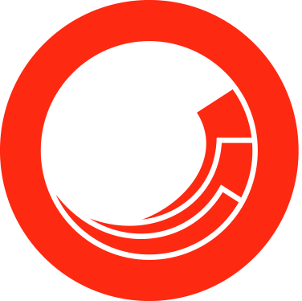
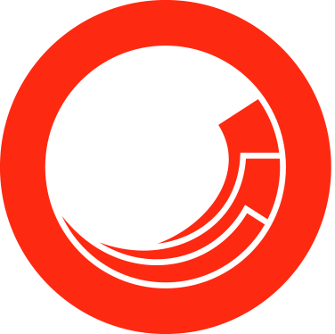
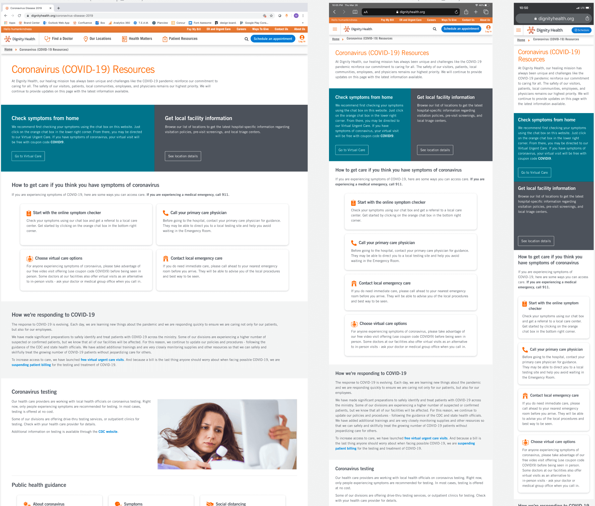

Overview
- Background:When the COVID-19 pandemic began, our patients needed a place to access resources and information on how to stay safe and get care.
Due to the urgent nature of the request, I designed and launched the COVID-19 resource hub and newsroom without any development resources. I also provided ongoing support and maintenance for the code base when content updates were requested, especially as we started encouraging patients to return to facilities. - Duration:April 2017 (2 weeks)
- Status: Launched 🚀
- My Role:Interaction Design, Visual Design, Frontend Development
- Tools:
 FigmaHTMLCSSSitecore
FigmaHTMLCSSSitecore
Ideation + concept
For this project, there were a few key areas I wanted to focus on:
- Information architecture - how can we organize the resource in a way that is most beneficial to the user?
- Visual hierarchy - what are ways we can display the information so users can easily understand and digest it? (steering away from blocks of text)
- Responsiveness - how can we ensure the experience transitions seamlessly from mobile to tablet to desktop?
Mockups + development

Resource hub design
The finalized design included a variety of different module types in order to provide visual interest to the user while highlighting the most important information above the fold.
When developing the HTML and CSS, I coded mobile-first, so the page would load faster on smaller screens and be responsive in nature.